Everbound: the AI-native
GTM system for Everphone.
This is the long version of cases 01 and 07 from the public page: how I turned one team's sales knowledge into a revenue system — one that captures buying intent, personalizes outbound at scale, and tells sellers when to move on strategic accounts. The thinking, the rollout, and where it goes next.
TL;DR
- Replaced a patchwork of individually-run campaigns with one revenue system: three motions — intent capture, persona-driven outbound, signal-based ABM — feeding one pipeline under one set of guardrails, across a mapped 67,837-company market.
- Buyer personas are built from real sales conversations and refresh automatically as new calls happen. Four revisions shipped without a single engineering request.
- Nothing reaches a prospect unreviewed: every message passes automated quality checks, a human approval, and a test send before anything scales.
- AEs get alerted the moment one of their strategic accounts shows a buying signal (ABM Hub), and the enterprise market is swept for signals that become campaigns (Account Radar). A person always presses send — no scraping, no auto-posting.
- Shipped in six phases, each with its own proof point, after a plan that survived three independent reviews.
No system — just scattered campaigns
There was no outbound system — different people ran their own Lemlist campaigns with their own lists and their own copy. No shared structure, no shared learnings, no single view of who had been contacted or what worked. Each campaign took days of manual copywriting and still read generic, and nobody could say which message was winning or why.
And the knowledge to fix it already existed. The AEs and SDRs knew exactly what makes a CIO reply and what makes a CFO reply. It sat in their heads and in old call recordings, and none of it reached the emails prospects actually got.
Meanwhile, pipeline was leaking in three places. An addressable market of 67,837 companies sat 99.3% untouched. Companies with live buying intent visited the website and left without a trace. And nobody was watching the strategic accounts, so funding rounds, leadership changes and other perfect reasons to reach out went unnoticed.
So the job was: replace the patchwork with one governed system, get the sales team's knowledge into it, keep a human approving everything that goes out, and build it so it keeps learning instead of going stale after launch.
Three motions, one source of truth
I didn't want three tools with three versions of the truth, which is where the old setup was heading. So inbound, outbound and ABM run as one system: same account and contact data, same compliance guardrails, same delivery pipeline. Each motion owns its own records and can't touch the others', but a signal found in one place is usable everywhere. One system also means one place to measure — every campaign, every signal, every send is on the same books.
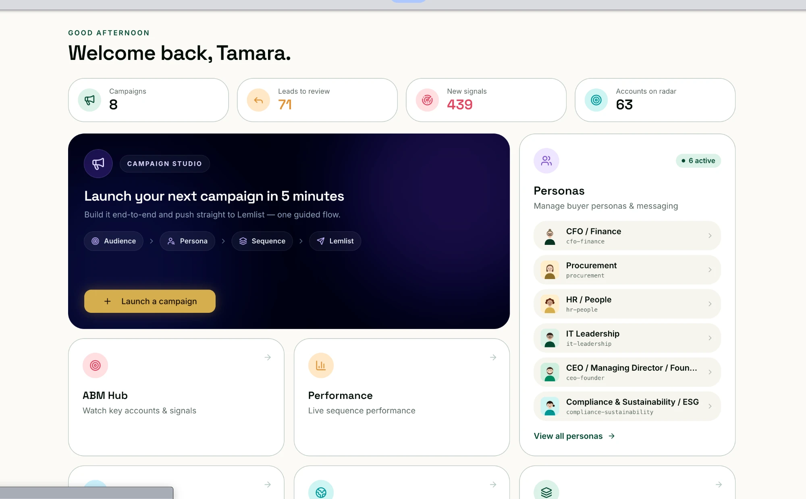
A. Always-on inbound intent
Companies visiting the website get identified, matched to the right people in their org, and queued with a ready-to-send sequence — reviewed and approved by a human before anything goes out. Finding "the right people" is its own engineered step: I built a Clay agent that runs deep research on each account's buying committee — who owns the budget, who runs the evaluation, who signs — so outreach lands with the actual decision-makers instead of whoever matched a title filter. This is the highest-volume motion in the system, and it's deliberately isolated: nothing downstream is allowed to alter its records. Timing is the whole advantage here. Reaching out while the interest is fresh is what makes this the account's best-performing campaign.
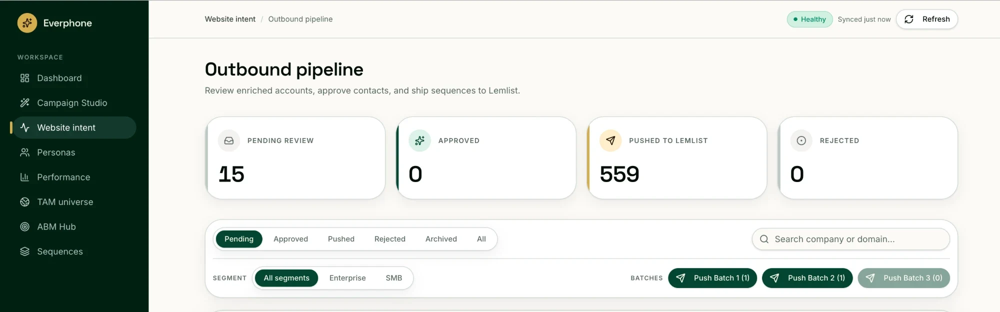
B. Persona-driven outbound
The core engine: campaigns planned in minutes, every lead matched to a buyer persona and given a sequence written in that persona's language. Section 4 covers how it works end to end.
C. Signal-based selling — ABM Hub + Account Radar
Two signal motions, side by side: ABM Hub keeps every AE on top of their own strategic accounts with same-day hot-signal alerts, while Account Radar sweeps the enterprise segment of the TAM and turns what it finds into outbound campaigns. Section 5.
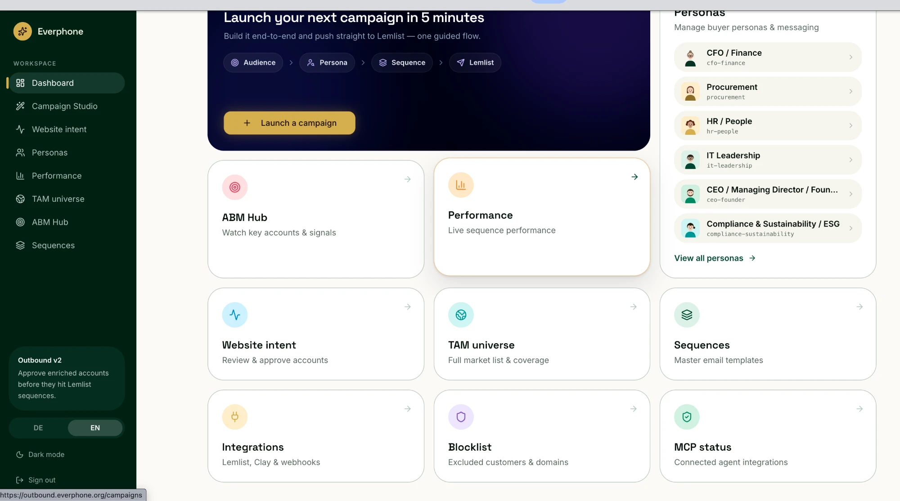
The ICP, codified from real sales calls
My favorite part of the system, because it never goes stale. Every sales call the team runs becomes raw material automatically: meeting notes sync from the team's shared drive every hour, interview docs get picked out and indexed, searchable in German and English. Nobody has to remember to file anything. The knowledge base grows as a byproduct of selling.
On top of that sits persona distillation. AI reads across the full knowledge base — buyer interviews, internal strategy material, and measured campaign learnings — and rewrites the buyer personas: five core roles (IT Leadership, Procurement, CEO/Founder, CFO/Finance, HR/People), later joined by a sixth for Compliance & Sustainability/ESG. Each persona holds priorities, pain points, objections, buying triggers, proof points, tone notes and a list of things not to say — and every line traces back to something a real buyer said on a real call. Distillation only ever produces drafts. A live persona never changes without someone reviewing the change, so one bad run can't quietly degrade active campaigns.
The personas went through four revisions in a few weeks, and none of them needed engineering work. New interviews landed, the distillation picked them up, I reviewed the drafts. The IT persona learned that factories need rugged devices because one manufacturing interview mentioned it. That's the whole point of the setup: someone has a good sales call, and the next campaign gets better because of it.
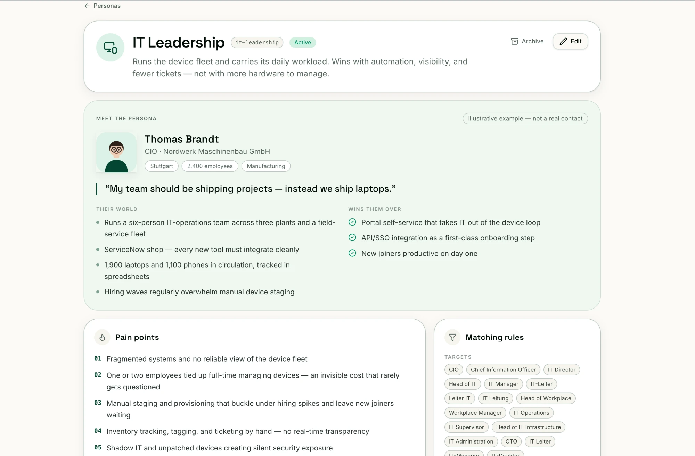
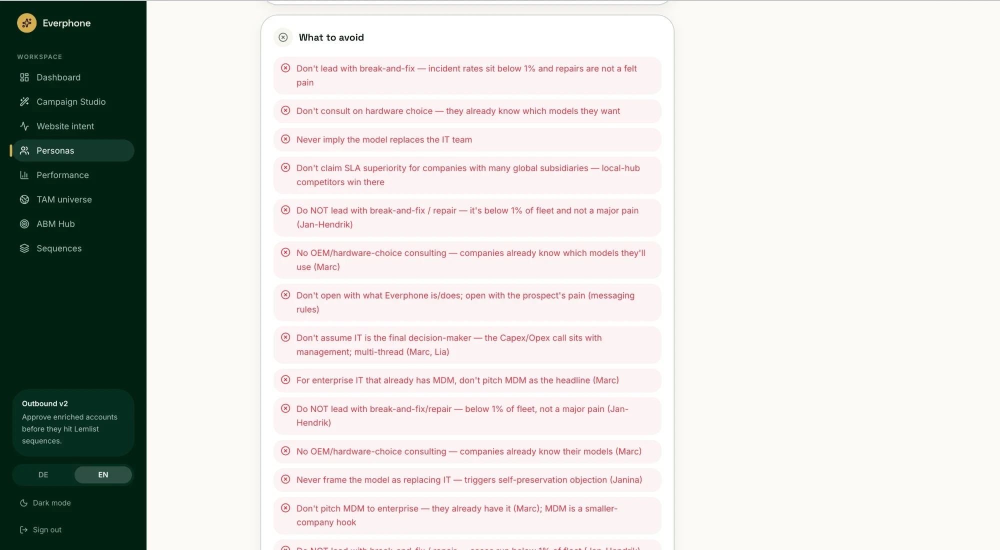
Quality control
Every message is assembled from four layers — brand voice, the persona profile, the campaign brief, and what we know about this specific person — and then checked before any human even sees it. Sequence structure has to match the campaign plan exactly. German emails must open with the formally correct salutation, computed by the system rather than trusted to a model, because getting Herr/Frau wrong once costs more credibility than a hundred good emails earn. Messages with broken personalization can't leave the building.
And when something changes later — say a contact's gender was recorded wrong — the fix is surgical: the salutation line updates, the approved message stays untouched. That principle let us correct thousands of existing contacts without re-reviewing content that was already good.
From a contact list to a launched campaign in minutes
The wizard has four steps: brief, template, contacts, generate. You start with a contact list and end up in a review queue that comfortably handles a couple hundred leads.
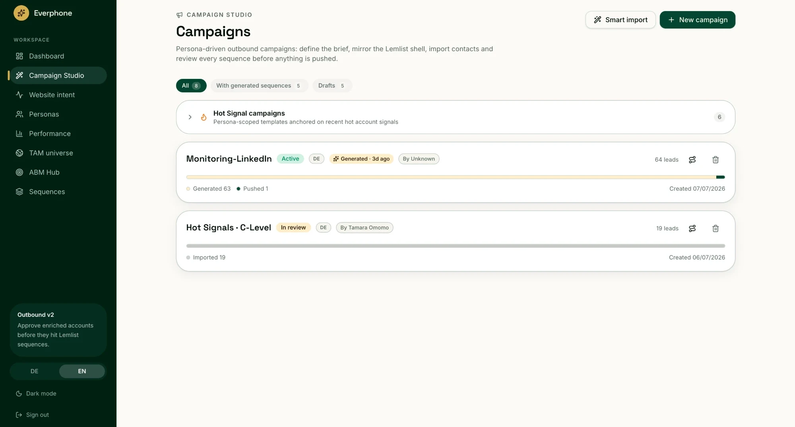
Enrichment
Every lead gets enriched with company context before personalization — size, industry, who else sits in the buying committee. The design principle: enrichment adds, it never blocks. A lead we can't enrich still gets a sequence, just with less context. Suggested colleagues ("who else should we talk to here?") are cached per company so large employers don't multiply costs — and every suggested colleague needs an email address entered by a person, because I wasn't going to let the system invent contact details. If the data isn't real, it doesn't enter the pipeline.
The review queue
Filter chips for every state, a full-screen mode with keyboard shortcuts for working through leads one by one, and per-step editing. If you change a lead's persona after generation, it gets marked stale until you regenerate, so nobody accidentally approves content written for the wrong buyer.
The two gates before anything reaches a prospect's inbox
- Compliance guards run twice. Law firms, legal contacts and existing customers get filtered at import, then checked again at send time. If someone adds a customer to the blocklist while a campaign is mid-review, that lead still gets caught before anything sends. Emailing an existing customer with a cold pitch is the kind of mistake you only get to make once.
- A test send before every launch. One test lead with real generated content goes to your own inbox first. If the sending template and the generated content ever drift apart, a prospect would get a visibly broken email with no error raised anywhere — so the system proves the rendering on us before it touches the market.
Pain routing
Every first email leads with one specific pain angle, chosen by rules keyed on persona, industry and company size. When no rule matches, the system picks and records what it picked. Either way the choice is logged per lead, so once reply volume builds up, "which pain angle actually gets replies from a CFO in automotive" is a question the data answers — not something we argue about in a meeting.
ABM Hub for the AEs, Account Radar for the market
Two motions run on signals, and they do different jobs.
ABM Hub — the AEs' cockpit
These are named accounts with an assigned AE and a live deal already in play — which changes what "outreach" means. Nothing here is cold; the sweep looks for competitive-displacement and contract-cycle cues, pure intel for the owner. A deep research agent continuously checks the web for strategic news and LinkedIn activity around each account and its buying committee — the same committee intelligence the research agent builds. The moment a hot signal lands — a funding round, a new CIO, a relevant post — the account's owner gets alerted directly, with a drafted comment, DM or email grounded in that signal, ready to adapt and send. Each AE sees exactly their own accounts, nobody else's. This is the piece the AEs lean on hardest: it turns "check on your accounts when you get a chance" into a ping that arrives while the reason to reach out is still fresh.
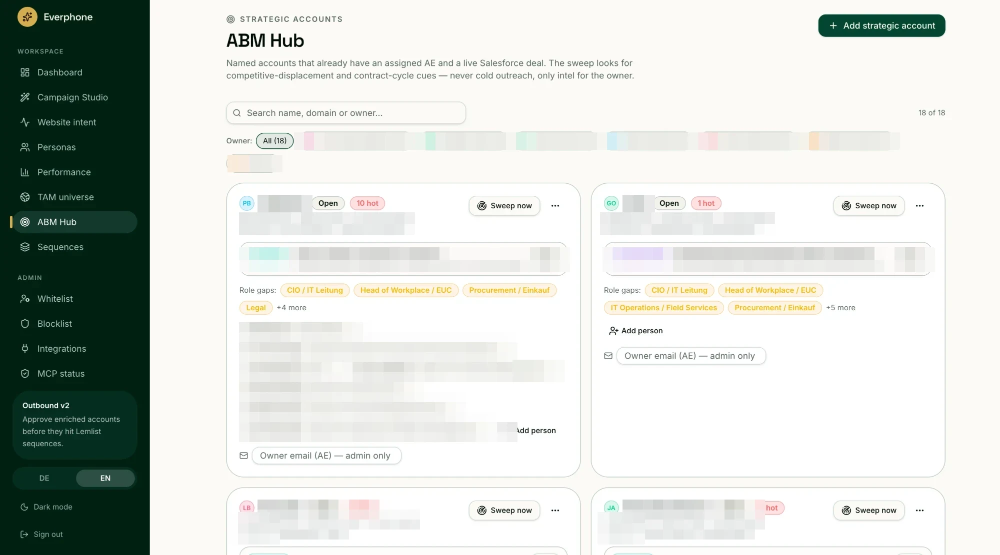
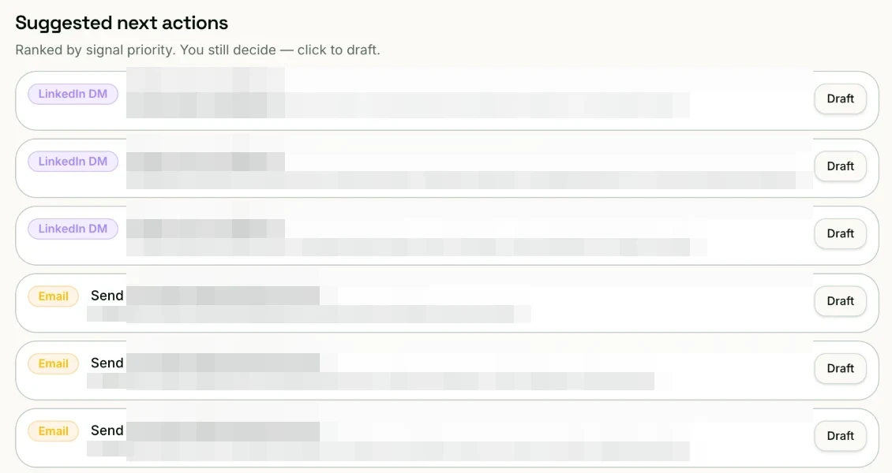
The owner alerts rolled out carefully: silent at first, logging what they would have sent, live once we'd watched them be right for a while. If the first ping an AE ever gets is a bad one, they mute the channel and the whole feature is dead.
Account Radar — watching the market itself
The TAM universe is segmented into our three ICP bands, and Account Radar sweeps the enterprise segment — accounts nobody owns yet. Signals gathered by the watch agent become outbound: persona-scoped Hot Signal campaigns, crafted from what the agent found. Even cold enterprise outreach opens with a reason that's true this week, not a generic pitch.
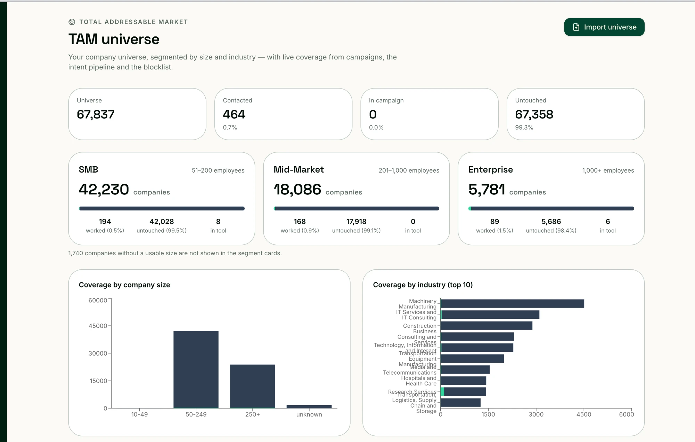
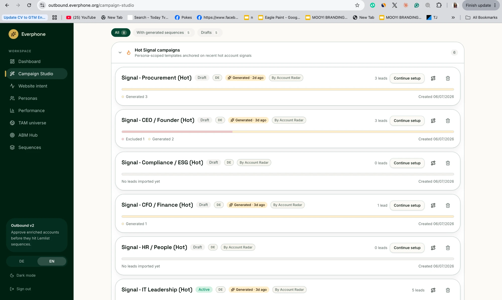
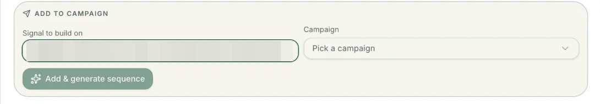
One constraint shaped both motions: there's no legitimate way to automate engagement on other people's LinkedIn activity, and I wasn't going to build on a terms-of-service violation. So nothing touches LinkedIn directly. Sweeps run against public sources, every finding needs a source link or it gets dropped, duplicates are filtered out — and a person always presses send.
Plan first, then six phases
The outbound engine was the risky piece: new data model, three external dependencies, and output quality that directly touches the brand. So I wrote the full plan first and had it stress-tested in three independent review passes before building anything. The reviews found real problems, and fixing them in a document cost an afternoon instead of a rebuild.
Then it shipped in six phases, each with a concrete way to prove it worked:
| Phase | Scope | Proof |
|---|---|---|
| 1 · Foundation | Data model and shared plumbing | Everything already live keeps working |
| 2 · Knowledge + personas | Knowledge base, persona library, distillation | A distill run on real interviews produces usable drafts |
| 3 · Wizard + import | Campaign setup and list import with compliance guards | Import report correct, including excluded rows |
| 4 · Enrichment + matching | Company context and persona matching | Leads carry the right persona in the queue |
| 5 · Generation + review | Personalization engine and the full review experience | German + English sequences pass every check; review works at 200 leads |
| 6 · Launch + measurement | Test sends, launch flow, performance reporting | A full campaign end to end, list in, live outreach out |
Two operating principles ran through all of it. Everything external is logged in one place, so when something misbehaves there's one place to look. And every long-running job is resumable — a closed laptop or a flaky connection never loses a campaign.
Results so far
| Before | After | |
|---|---|---|
| Outbound structure | Individually-run campaigns, no shared view | One system, one pipeline, 100% human-reviewed |
| Campaign prep | Days of manual copywriting | 15-minute review |
| Coverage per run | A handful of hand-written contacts | 500+ personalized contacts |
| Sales knowledge | In sellers' heads and old call recordings | A living knowledge base → 6 personas, 4 revisions shipped |
| Market visibility | No shared picture of the market | 67,837 companies mapped, coverage tracked live |
| Web visitors with intent | Left anonymously | 559 contacts reached, highest-performing campaign |
| Strategic-account signals | Unnoticed | 439 signals across 63 accounts, sellers alerted same-day |
| Languages | Ad hoc | German + English, native-quality by contract |
- The website-intent campaign is the highest-performing campaign in the account. Companies that were leaving the site anonymously now get identified, matched to the right contacts, and reached while the interest is fresh — and that timing shows up directly in reply and conversation rates.
- Campaign prep went from days of copywriting to a 15-minute review, and one run covers 500+ contacts instead of a handful.
- The system runs at real volume: 8 live campaigns, 559 contacts pushed through the web-intent pipeline, 439 signals surfaced across 63 accounts on radar — the numbers on this page are a live snapshot, not a demo.
- The whole German market is mapped: a 67,837-company TAM universe, segmented by size and industry, with live coverage tracking. At 0.7% contacted, the pipeline ceiling is nowhere in sight.
- First lines open with the recipient's actual role-specific pain. A CFO reads about budget predictability, a CIO about ticket volume. The wording comes from real calls, not guesses.
- Full revenue attribution is the next build (see below), so the numbers here are directional rather than closed-won figures. What's already clear: warmer timing, sharper first lines, and a fraction of the prep time.
Where it goes from here
- Find the winning pain angle per buyer. Every email already records which pain it opened with. Once reply volume builds, we'll know whether a CFO in automotive responds better to budget predictability or to dead capital, and campaigns get tuned on evidence instead of opinion.
- Grow the persona library with the market. Six personas today. As interviews keep landing, new roles and new industry angles get added the same way the Compliance/ESG persona did: from what real buyers actually say.
- Expand beyond DACH. The German/English setup is the template. New market, new language, same playbook: personas from local sales calls, outreach in the buyer's own words.
- Close the loop with revenue. Connect campaign and signal activity to pipeline and closed-won, so the system can answer the only question that matters: which conversations turned into deals.